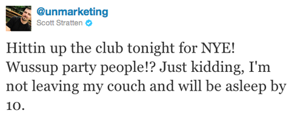

Here you go ladies…our two favorite things: Wine + Margs = HEAVEN in a glass!
Beauty Discoveries
January 11, 2012 by

I thought I’d share some stuff I’ve used in the last few months either via a sample or I’ve purchased and been using, that I’ve fallen in love with.
- Biodroga Intense Moisture Formula Eye Care-I have been on the hunt for an eye cream for what seems like EVER. The problem I run into is that as the day goes by my eyes start burning from certain eye creams. I got a sample of this a while back and used it for a good week without any problems…that was a first! So I bit the bullet and bought it and I have no clue if it’s going to make me look 20 years younger but I figure eye cream that doesn’t cause massive burning is better than no eye cream at all. Right?
- Aquage Beyond Shine Spray-I use this when I’m done with my hair, but I spray it in my hand first and then run my hands through my hair. If I spray it directly on my hair it will look DUUUURTEEEEE and I might as well start all over.
- Nars Pro-Prime Pore Refining Primer – Oil-Free-I read somewhere that as you get older you will want to use a primer under your foundation so that it falls into all those fine lines and wrinkles and your foundation will go on smoother. I’ve tried a couple and then got this as a sample from Sephora and LOVED it. I feel like it makes my pores noticeably smaller and my foundation goes on smooth but also I’m not an oil slick by the end of the day.
- Redken Hot Sets 22 Thermal Setting Mist-I use this prior to flat ironing my hair. I like it. I mean there are a lot of different ones out there and I just thought I’d change it up a bit. Good stuff.
- Rosebud Salve in a Tube-I’m a fan of the Rosebud Salve in the little tin, so when I saw this (and I may be behind the times on this being in a tube) I instantly bought it. It’s always nice to change up the lip balm every now and then and I love the way this smells.
- Jonathan Product Weightless Smooth No-Frizz Hydrating Balm-I’m going to venture to say that this product has been LIFE CHANGING. And I’m two for two on Jonathan Product stuff. I think I’ve said this before but my hair is very thick and naturally wavy but not always in a good way, so I straighten my hair when I want to look presentable. However, living in the Houston area with humidity 11 out of 12 months of the year, straightening my hair can be challenging. UNTIL NOW! I got this stuff as a sample and I just thought I’d give it a shot and OMG the difference it has made in getting my hair straight and KEEPING it straight once I walk outside is unbelievable. It’s a keeper.
- Finishing and Blending Face Antibacterial Makeup Brush #955 – Studio Line by bdellium tools-I’ve always been the kinda girl that put on her foundation with a sponge, and thought I might try a brush recently and this one didn’t disappoint. It’s kinda crazy how different foundation can look with a brush as opposed to a sponge. Definitely worth a shot.
Captured by Chambray
January 10, 2012 by
I’m beginning to think that my love for chambray could very well trump my love of stripes in the very near future. Could that really happen??? Well, I am coveting all of these chambray pieces hard core right now for my whole family.

- Old Navy, Red Chambray Shirt
- Gap, Mens Lightweight Chambray Jacket
- Target, Merona Chambray Scarf
- Gap, Chambray Driving Cap for Boys
- Alloy, Paper Bag Waist Pants
- Gap, Boys Chambray Button Down
My New Stack
January 10, 2012 by

I’m going to share with you one of the Christmas presents I got that I LOVE LOVE LOVE. These rings by Leslie Freeman Jewelry Design were gifted to me by my parents. I love the endless possibilities with these..you can wear them all or just a few or mix and match with other rings. Here’s what I did on the day I got them, I mixed them with some of my sparklies.

Scattered
January 9, 2012 by
Posts that stayed with me or were thought provoking…
2012 in One Word
The Miracle of a Lasting Marriage
A Dog For My Dad
And here’s some food I want to try…
Puffy Oven Pancake
Aww, Nuts.
Pinterest Cooks: The Spanglish Sandwich
Brussel Sprouts with Mushrooms and Bacon
Tweets I found HI-larious…
(that one was sent on NYE)
A whole new hair doo!
January 6, 2012 by

So, I have naturally jankywavy hair, but for the VAST majority of my life I have always worn my hair straight. Partly because I didn’t 100% know how to fix my hair when it was wavy, and partly because I had the time to spend on my hair so it didn’t really matter. BOY HOW THINGS CHANGE!
After C was born I learned right quick how to make my wavy hair look less janky and more CUTE…here are a couple of the products I use:
I spritz my wet hair w/ the curl booster and crinkle my hair up all over. I then use a diffuser to dry my hair. After that, I use a 1 inch curling iron to fix the janky parts of my hair, rub a small amount of redken glass through my hair, spray with hair spray, and voila! This process takes all of less than 10 minutes from start to finish (versus the 30+ minutes it takes me to straighten it from shower to door)…WOOHOO! Not too shabby eh?

Oh yeah, my fellow Tipsy gal Der took this pic. She has COMPLETELY found her calling in life ya’ll!
Baby Lips
January 5, 2012 by
I don’t know whether it’s this cold/plague that I have come down with or the drier weather around these parts, but my lips have been horrendously dry and scaly. Enter this.
I purchased this in Peach Kiss for it’s shimmery light pink color several weeks ago, not knowing it would be my saving grace when I thought my lips just might peel right off. I literally used this all day long and have seen DRASTIC improvements in the condition, feel and overall grossness of these chapped lips of mine. I would say this one is a keeper fo sho!
Sweatin It in a Sweater
January 5, 2012 by
There are two things Texans don’t need many of: coats and sweaters. That does not keep me from wanting all the cozy numbers that show up in stores the second we drop into the 60 degree temps. These are REALLY calling my name. They are also calling out that I may need a stripes intervention. I think every single item I like these days is striped.

- Old Navy, Striped Intarsia Sweater
- Forever 21, Wide Stripe Sweater
- Forever21, Striped Sweater Top
- Forever 21, Thick Stripe Sweater
- Forever 21, Colorblock Turtleneck Sweater
Hump Day Happy Hour: Rose
January 4, 2012 by

Fell in LOVE w/ Pedernales Cellars during my anniversary weekend in “Texas Wine Country”. (Honestly, We liked their wine so much, we joined their wine club!)
The Garnacha Dry Rose was my absolute FAVE! I actually liked it so much that I came home w/ a case of it…
Please don’t be a wine snob and turn your nose up at a Rose…it is soooo yummy…and absolutely worth a try!
New Years Resolutions: Sarah 2012
January 4, 2012 by

Man oh man…I cannot BELIEVE it’s already 2012! I need to get this year started off right, so I’m actually going to create some very attainable resolutions for myself.
1. WORKOUT!!!! Yes, I have lost all my baby weight (+5 pounds), which means I’m actually at my ultimate goal weight and I was NOT at that weight pre-preggo. However, I’m thinking the main reason I’m at my ultimate goal weight is because I have lost a lot of muscle mass…? Hahaha…I’m not sure this is actually the reason, but my workouts have been few and far between. In July, I started the post-baby weight loss process and hit it hard, including at least 2 sessions of bikram yoga a week mixed in with cardio and weights. I had a great routine that I was really happy with until the end of August, when my hubby took a new job and was out of town Mon.-Fri . I mean, who wants to work out after taking care of a baby ALL day by yourself???? NOT ME!!!! His traveling has calmed down a LOT, so I’m joining the YMCA and going to get back into fighting shape!
2. BLOG!!!! When us gals started this blog in 2009 it was a fabulous creative outlet, but I obviously put writing on the back burner when baby C came along in March. I work full-time from home and between managing my baby, work, and house-hold chores, I never really got a good grasp to make time for ANY creative outlets. This is ALL changing. I’m literally forcing myself to get back on track because it’s a great way to get your thoughts out AND to fake shop…I mean, lets face it, it’s hard to justify that uber-cute new spring wardrobe when you have a new little one, but it will never hurt to look! 🙂
Happy 2012 everyone!


Recent Comments